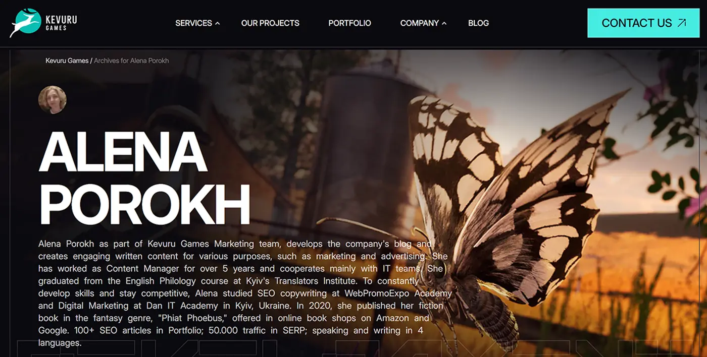

Realizacja, w której nie było strony do zbudowania.
Studio gamedev, które miało już serwis, markę i handlowców. Brakowało warstwy, którą agencje wyceniają na końcu: treści mówiących dokładnie, co studio robi, napisanych pod kupującego w Los Angeles i kupującego w Warszawie - a to nie jest ta sama osoba.

Od czego się zaczęło
Każda inna realizacja na tej stronie to klient i zaczyna się od serwisu. Ta nie jest ani jednym, ani drugim: to była praca na etacie jako marketing copywriter - i właśnie dlatego warto ją przeczytać. Kevuru Games to studio game art i developmentu: postacie, środowiska, assety 2D i 3D, produkcja pełnocyklowa dla cudzych tytułów. Serwis był, marka była, handlowcy byli. Luka była w słowach.
Outsourcing produkcji gier kupuje się po cichu, z krótkiej listy, zanim ktokolwiek się odezwie. Producent z tytułem do wydania porównuje cztery studia pod kątem tego, czy robiły już dokładnie taką pracę, czy styl w portfolio zgadza się z tym, który ma w głowie, i czy pipeline udźwignie wolumen. Nic z tego nie jest problemem projektowym. Wszystko jest problemem treści.
Studio może mieć grafików i i tak przegrać brief, bo podstronę opisującą tę pracę napisał ktoś, kto nigdy nie siedział na spotkaniu produkcyjnym.
Podejście
Wszystko ukształtowały dwie rzeczy: kupujący jest techniczny, a ten sam angielski czytają dwa rynki.
Podstrony usług na tyle precyzyjne, żeby dało się je wycenić
Nikt nie szuka „game development". Ludzie szukają dokładnego kształtu tego, co mają do zrobienia, a podstrona mówiąca „robimy wszystko" dyskwalifikuje studio na miejscu. Dlatego każda usługa musiała stanąć na własnych warunkach, w słownictwie, którego kupujący już używa:
- Game art - concept, postacie, środowiska i propsy, rozdzielone według stylu, a nie zbite w jedno, bo kupujący przychodzi z gotowym stylem w głowie.
- Produkcja 2D i 3D - dwa różne pipeline’y, dwóch różnych kupujących i dwa różne budżety, więc dwa zestawy podstron zamiast jednego.
- Produkcja pełnocyklowa - zlecenie, które oddziela studio od podwykonawcy, i to, przy którym kupujący najbardziej potrzebuje pewności co do procesu.
- Porting i co-development - wyszukiwane zupełnie innym słownictwem, zwykle przez kogoś w połowie projektu i pod terminem.
- Konkretne silniki i platformy - Unity, Unreal, mobile, konsole. Często to właśnie ten filtr buduje krótką listę.
- Pytania o NDA, prawa i pipeline - to, o co poważny klient pyta jako trzecie, i to, co po cichu rozstrzyga.
Jeden język, dwa rynki
Treści są po angielsku dla USA i dla Polski, co brzmi, jakby znosiło problem lokalizacji - a nie znosi. Amerykański wydawca i polskie studio wpisują te same angielskie słowa z zupełnie innymi założeniami: co do cen, stref czasowych i tego, co obejmuje „full-cycle". Napisanie jednej podstrony dla obu oznacza dobranie sformułowań, które przetrwają obie lektury, zamiast schlebiać którejś. To była najdłuższa część tej pracy.
Angielski jest językiem roboczym outsourcingu produkcji gier po obu stronach tego zlecenia - czyta go i kupujący z USA, i ten z Polski. To ograniczenie, a nie skrót: każde zdanie musi przetrwać dwa zestawy założeń co do ceny, procesu i tego, co jest wliczone, bez pisania go dwa razy.
Infografiki, bo nie każda odpowiedź jest zdaniem
Pipeline produkcyjny wyjaśniony w trzech akapitach to akapit, którego nikt nie kończy. Ten sam pipeline jako jeden diagram to rzecz, którą producent zrzuca i wysyła swojemu leadowi. Infografiki nie są tu ozdobą na treści - niosą te części odpowiedzi, z którymi proza radzi sobie źle: kolejność, punkty przekazania i to, kto odpowiada na którym etapie.
Co powstało
- Treści SEO - pisane pod to, co kupujący naprawdę wpisuje, a nie pod wewnętrzną listę usług studia.
- Podstrony usług - jedna na dyscyplinę, każda odpowiadająca na własną obiekcję, zamiast powtarzać firmowy wstęp.
- Strategia social media - co publikować, w jakim rytmie i co z tego wspiera sprzedaż, a nie licznik obserwujących.
- Infografiki - pipeline, proces i zakres wyjaśnione wizualnie, na te części, które producent musi przekazać dalej.
- Sformułowania na dwa rynki - jeden angielski, który czyta się poprawnie dla kupującego w USA i w Polsce.
Layers live
Krótsza niż każda inna lista na tej stronie - i uczciwie. Zostałam wzięta do warstwy treści, a nie do systemu. Studio miało resztę, a udawanie inaczej zamieniłoby tę stronę w fikcję.
Efekty
Pisałam treści, nie trzymałam analityki. Przypisanie pipeline’u studia podstronom, które napisałam, byłoby twierdzeniem, którego nie udowodnię - a takich na tej stronie nie stawiam. List klientki, cytowany niżej, mówi, że ruch i konwersja wzrosły. To jej relacja i warto ją tak czytać - ale jest jej, a nie liczbą, którą zmierzyłam, i to nie to samo co wynik, który mogłabym Ci pokazać. Sama powiem coś węższego: podstrony usług opisują teraz osobne usługi słownictwem kupującego, a pytania o proces dostają odpowiedź przed formularzem, a nie na pierwszej rozmowie.
„Odegrała kluczową rolę w tworzeniu wysokiej jakości treści na nasz blog, landing page i kanały social media. Jej umiejętność pisania tekstów, które przyciągają i angażują, nie tylko zwiększyła ruch na stronie, ale też poprawiła konwersję i zaangażowanie w social mediach. Pisze jasno, przekonująco i pod naszą grupę docelową, co bardzo wzmocniło głos i obecność naszej marki w internecie."
Co dalej
Ścieżka polskojęzyczna to oczywista luka. Sprzedaż do Polski po angielsku działa na studiach, które i tak pracują po angielsku, a traci te, które nie. Kompromisy w sformułowaniach opisane wyżej przestałyby być kompromisami. Potem infografiki zasługują na dystrybucję, a nie jednorazową publikację - te same diagramy niosą sekwencję na LinkedIn prawie bez zmian.
Każda inna realizacja tutaj to system, który złożyłam od zera dla klienta - więc uczciwie jest zapytać, czy metoda potrzebuje całego systemu albo relacji z klientem, żeby działać. Nie potrzebuje żadnego z tych dwóch. Wewnątrz cudzej firmy, na jednej warstwie jej stosu, bez wpływu na projekt graficzny, platformę i analitykę, obowiązuje ta sama dyscyplina: dowiedz się, jak naprawdę brzmi popyt, pisz pod to, odpowiedz na obiekcję przed formularzem. Warstwa jest mniejsza. Myślenie identyczne.
Dobra robota, źle opisana?
Najdroższa luka w B2B zwykle nie leży w projekcie graficznym. Leży w podstronie usługi, która równie dobrze opisywałaby każdego z Twoich konkurentów.